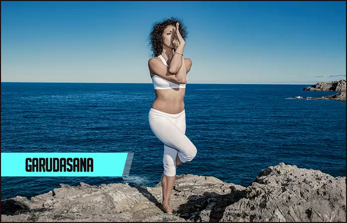
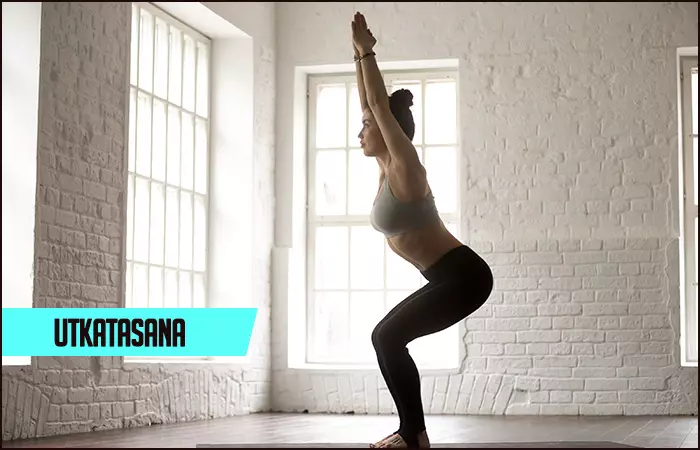
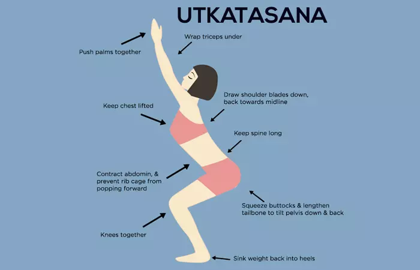
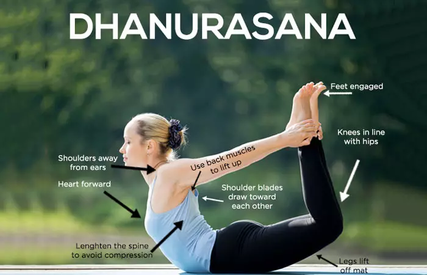

Garudasana (Eagle Pose)

- Stand erect. Gently bend your right knee, and wrap your left leg around your right, such that the knees are stacked over each other. Your left foot must touch your right shin.
- Raise your arms to the shoulder height and wrap your right hand around your left. Ensure that your elbows are bent at 90-degree angles and are also stacked.
- Strike a balance in the pose as you gently bring down your hips. Your knees must move towards the midline instead of leaning to one side.
- Hold the pose for a few seconds. Breathe deeply and slowly. Focus on the third eye, and let go of your negative emotions.
- Release the pose, switch the limbs, and repeat the pose.
Utkatasana (Chair Pose)

- Stand straight on your mat and place your feet slightly apart.
- Stretch your arms forward, ensuring that your palms are facing downwards. Your arms must be straight, and you must make sure not to bend your elbows.
- Gently bend your knees and push down your pelvis, such that it seems like you are seated in an imaginary chair.
- Make yourself comfortable. To engage better in the pose, imagine reading a newspaper as you hold the pose. And as you do that, you must make sure that your hands are parallel to the floor.
- Be aware as you hold the pose, and keep your spine lengthened. Calm your mind and relax. Smile. Now hold the pose for up to a minute.
- Gently go down and sit in Sukhasana.
Dhanurasana (Bow Pose)
- Lie flat on your stomach, keeping your feet hip-width apart and your arms beside your body.
- Now, gently fold your knees and hold your ankles.
- Inhale, and lift your chest and legs off the ground. Pull your legs back.
- Look straight and keep your face stress-free. A smile should help.
- Hold the pose as you concentrate on breathing. Your body should be as taut as a bow.
- As you get comfortable in the pose, breathe long and deep.
- About 15-20 seconds later, exhale and release the pose.
Garudasana or Eagle Pose is an asana. Sanskrit: गरुडासन; Garuda – Eagle, Asana – Pose; Pronounced As –
gah-roo-dah-sah-nah
Garuda is the Sanskrit term for eagle. Indian mythology suggests that
Garuda was the king of all birds. This bird not only served as the
vehicle of Lord Vishnu but was also a frontrunner when it came to
fighting against demons. Garuda also means devour. Being an old
representation of the mythical phoenix, they say that the Garuda
identifies itself with the “all-consuming fire of the sun’s rays”.
About The Pose:
Garudasana or the Eagle Pose is named after Garuda, the king of birds in the Indian mythology. This Vinyasa yoga asana is a standing pose and works best when practiced in the morning on an empty stomach. Hold it for 15-30 seconds.
What You Must Know Before You Do The Asana
This asana must be done only on an empty stomach. You need to make sure to have your meals four to six hours before your practice and give your body enough time to digest your food. Ideally, there needs to be a 10-12 hour gap between your meals and your practice, which is why it is best advised to practice this asana early in the morning. However, owing to busy schedules, a lot of people find it hard to work out in the morning. Such people may practice yoga in the evening. Your bowels also must be clean when you practice this asana.

How to do Garudasana:
Benefits:
Garudasana helps balance your body. It strengthens your leg muscles and lessens sciatica and rheumatism. The pose loosens your legs and makes them flexible.
Utkatasana, Chair Pose, Fierce Pose, Hazardous Pose, Lightning Bolt
Pose, Wild Pose, or in Bikram Yoga, Awkward Pose, is an asana.
Sanskrit: उत्कटासन; Utkat – Wild/Fierce, Asana – Pose; Pronounced As –
OOT-kah-TAHS-anna
How easy it is to sit on a chair! But when you sit on an imaginary
chair, it could be quite challenging. This asana is all about sitting
on that imaginary chair. Utkatasana translates into an intense or
powerful pose. This asana is also called the Chair Pose, the Powerful
Pose, the Awkward Pose, and the Fierce Pose.
About the Pose
Utkatasana or the Chair Pose is like sitting on a chair, except that there is no chair. It is not as easy and simple as sitting on an actual chair. The pose is a Vinyasa yoga asana. Practice it on an empty stomach and hold it for 30 to 60 seconds.
What You Must Know Before You Do The Asana
You must make sure to keep your stomach and bowels empty before you practice this asana. Have your meals at least four to six hours before you do the asana so that your food gets digested, and there is enough energy for you to expend during the practice. It is best to practice yoga first thing in the morning. But in the event you cannot work out in the morning, it is alright to practice it in the evening.
-

How To Do Utkatasana:
Benefits:
Utkatasana strengthens your lower back, torso, and calves and stretches your chest. The pose stimulates your heart and tones your knee muscles.

Sanskrit: धनुरासन; Dhanur – Bow, Asana – Pose; Pronounced As dah-noo-rah-sah-nah
Dhanurasana or the Bow Pose is one of the 12 basic Hatha Yoga poses. It is also one of the three main back stretching
exercises. It gives the entire back a good stretch, thus imparting flexibility as well as strength to the back.
About The Pose:
Dhanurasana or the Bow Pose is named so because it resembles a stringed bow. It is a good back bend and works great when you practice it in the morning on an empty stomach. Dhanurasana is a Vinyasa yoga asana. Hold it for 15 to 30 seconds.
What You Must Know Before You Do The Asana
You must make sure to keep your stomach and bowels empty before you practice this asana. Have your meals at least four
to six hours before you do the asana so that your food gets digested, and there is enough energy for you to expand
during the practice.
It is best to practice yoga first thing in the morning. But in the event you cannot work out in the morning, it is
alright to practice it in the evening.
-

How To Do The Dhanurasana
Benefits:
Dhanurasana will help you overcome lethargy and lose weight. It treats diabetes and cleanses your blood. The pose also cures asthma and slipped discs.